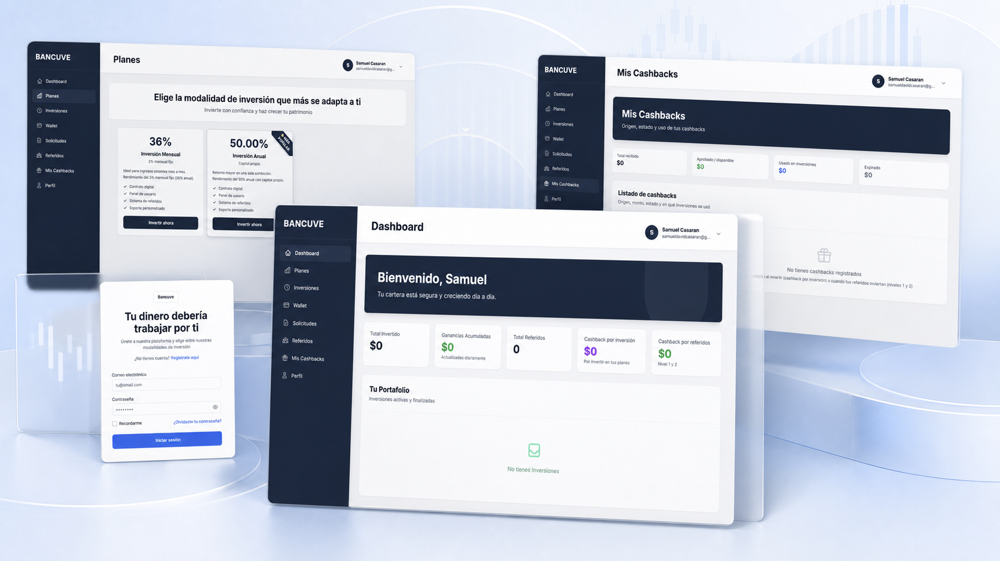
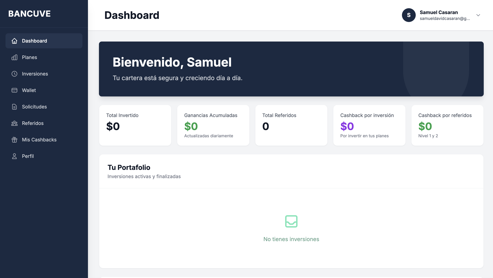
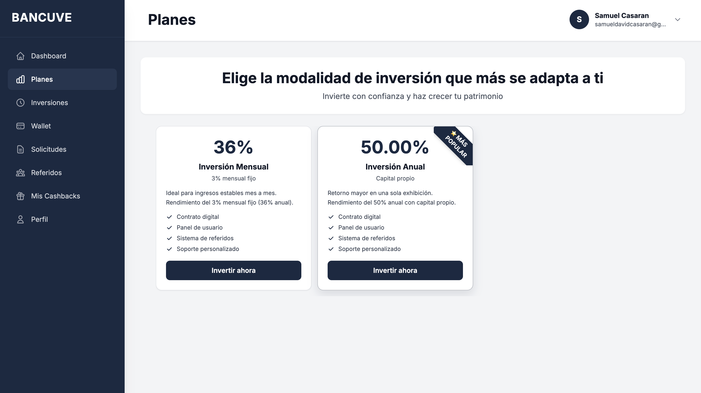
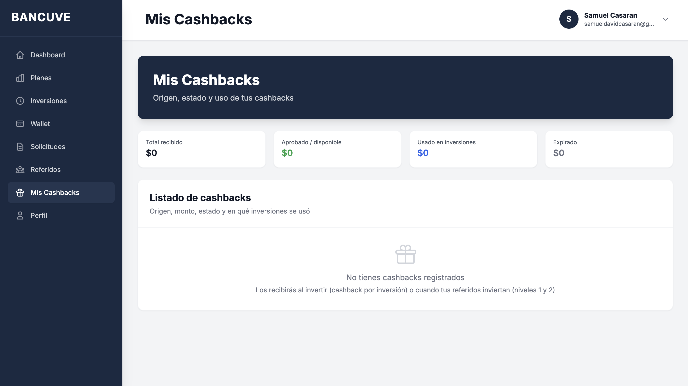
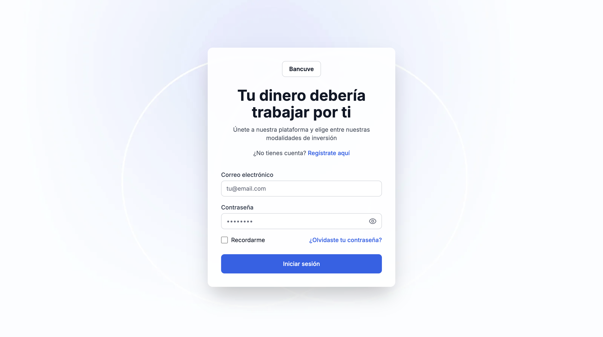

Plataforma financiera para visualizar inversiones, activos bajo custodia, rendimiento y movimientos mediante una interfaz orientada a claridad y control.

Plataforma diseñada para la supervisión patrimonial y monitoreo de inversiones donde la claridad de datos y el orden de los indicadores clave resultan esenciales.
Los inversores requerían acceder de manera transparente a sus activos en custodia y rendimiento periódico sin sobrecarga de información ni interfaces confusas.
Organización de métricas principales en la zona superior y desglose detallado en bloques inferiores.
Selección de gráficos de contraste adecuado para facilitar la lectura de tendencias de rendimiento.
Diseño de patrones visuales claros para estados de confirmación y visibilidad de datos sensibles.
Desarrollo de tarjetas, tablas de movimientos e indicadores reutilizables en Figma.




El proyecto demostró la importancia de estructurar dashboards financieros con jerarquía estricta, permitiendo a los usuarios comprender el estado global de su cartera en pocos segundos.
Estoy disponible como Product Designer para integrarme a equipos de producto.
Escribir Correo